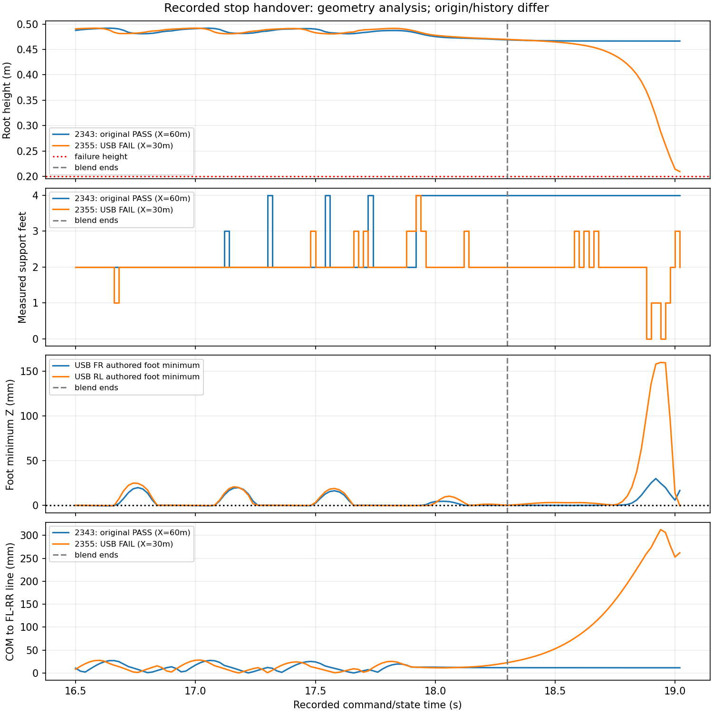

대상: Jetson Orin Nano Super · Ubuntu24.04 · ROS2 Jazzy. 보드는 NUCLEO-G474RE/MB1367 가정.
배포 소프트웨어 CPU 검증 완료. USB 물리시험2355는2/3, 조건을 맞춘 재검증2424는4/4 통과했다. 이전 실패 조건은 대조2432에서도 동일하게 재현됐으며 복귀 안정화와 실시간 WBC 최적화가 남았다.
95파일 / 14415542 bytes. SHA256: b8e14793ea00444c70413197fd3630c3cc07d05ada600f24215c149b2002170a
실제 실행은13:39:21–13:51:40 KST, Slurm COMPLETED/0:0이었다. 17:29 예상보다 빨리 자원이 확보됐다. 이전2343과 같은 rough,standing_hold,sit,deep 순서와 월드X=0/30/60/90m에서4/4를 통과했다. 정격 RMS 초과0/48, 피크 한도 초과0, 기록된 자가 접촉0N이다.
| 시험 | 기록 길이 | 결과 | 정격 RMS 초과 | 자가 접촉 | 추정 상전류 RMS 범위 |
|---|---|---|---|---|---|
| 요철 주행 | 24.0s | PASS | 0/12 | 0N | 3.17–9.70A |
| 기립 유지 | 12.0s | PASS | 0/12 | 0N | 0.16–6.77A |
| 10cm 앉기→기립→보행→정지→앉기 | 30.0s | PASS | 0/12 | 0N | 1.91–8.57A |
| 18cm 앉기 통합 | 30.0s | PASS | 0/12 | 0N | 1.92–9.05A |
기존2343과 공통281소스는 동일했고, 물리 상태·관절·접촉·적용 명령·추정 토크 배열은 모두 bit-identical이었다. kp/kd 기록에는 wire float32 환산 차이만 있으며, 실제 float32 게인으로 변환하면 동일하다. 전류는 효율1 가정의 토크 환산값으로 실측·배터리 전류가 아니다. 비교 근거
이 통과는 월드X=30m의10cm 실패2355를 해결했다는 뜻이 아니다. 실패했던 flat,sit,deep 순서·좌표0/30/60m를 USB 왕복 없이 기존 ROS2 경로로 재현하는 대조2432를 compute/QoSadmin/shard1로 제출했다. 이 대조는17:30:45–17:39:39 KST에 실행돼FAILED2:0이었다. 평지·18cm는 통과했고10cm는19.04s에 동일하게 실패했다. 단일 원인과 실제 하드웨어의 안정성은 아직 미확정이다.
이번10cm 통합 통과 영상30초 · 이번18cm 통합 통과 영상30초 · Slurm 상태
| 범위 | 결과 | 근거 |
|---|---|---|
| Local Python3.12 scoped tests | 117 PASS | log |
| Extracted bundle: native Jazzy/Python3.11 scoped tests | 108 PASS | log |
| C core / HAL example compiled with stubs | 12 + 4 PASS | log |
| Native emulator / Python-C cross language | 5 + 3 PASS, 100 randomized vectors | log |
| Bundle hashes and runtime initialization | 94 payload hashes; actor235→12, CAD13body/23.094498kg, .5s operator timeout; no simulator imports | log |
| New Isaac codec physics | Job2355: flat14s PASS, deep-crouch30s PASS, 10cm sit/rise/walk/stop/sit FAIL19.04s | log |
원본 CAD와 외부 ROS2/Isaac의 비계단9/9 통과. 시험별 관절108기록에서 정격 RMS 초과0개, 기록된 비인접 자가 접촉0N. 평지 추정 RMS 상전류3.26–9.94A. 전류는 효율1 가정의 환산값이며 배터리·실측 전류가 아니다. 원본 결과·영상
12관절 출력축 q/dq/Kp/Kd/feedforward를 한 프레임으로 200Hz 전달하고 실측 q/dq/토크를 반환한다. 정책50Hz, host50ms/MCU100ms watchdog, 기본 모터 비활성이다. 같은 세션 HELLO는 fault/sequence를 초기화하지 않는다. 손상된 큰 프레임 뒤 CRC-valid 프레임 회복, float32 토크 경계, 5ms feedback 격자, 새 ISR fault 보존을 회귀로 확인했다.
Isaac 어댑터는 실제 PTY와 native C codec을 거친 값을 기존 ROS2/PhysX 경로에 적용한다. 실제 MCU controller/watchdog/CAN과 Jetson의 지연을 물리 시험에 포함했다고 주장하지 않는다. 새 hardware gateway/sensor_sync는 별도의 native Jazzy 시험으로 확인했다.
실제 CAN motor callbacks는 아직 연결하지 않았다. 모터 ID·부호·영점과 AK70-10/AK10-9 KV60 V3.0의 CAN 게인 인코딩, 깊이84×84·오도메트리·발 접촉 드라이버가 필요하다. 현재 정책은 깊이 카메라가 필요하다. 실제 Jetson 전송·모터 활성·MCU 플래싱은 수행하지 않았다.
job2355는 평지14s와18cm 통합30s를 통과했다. 10cm 앉기 통합은19.04s에 몸통 높이0.2m 미만으로 중단되었고, 비인접 자가 접촉 최대375.58N이었다. 실패시험 RMS는 단축된 기록구간 통계다. 실패 원본
기존2343과 공통 소스281파일 및 checkpoint는 동일하다. baseline6000틱 명령을 wire로 재생해 최종float32 qtarget/FF/gain/maxForce 차이가0임을 확인했다. baseline sit의 월드X=60m, USB sit은X=30m이고 이전case/reset 이력도 다르다. 첫 물리 step부터 상태가 미세하게 달라, wire 오류가 원인이라고 단정할 수 없다. 진단 근거
원래2343 전체 순서 rough,standing_hold,sit,deep으로 좌표0/30/60/90m와 이전시험 이력을 맞춘 USB 비교2424를 compute/QoSadmin/shard1로 제출했다. 이 작업은13:39–13:51 KST에 실제 실행돼4/4 통과했다. 실제 Jetson/aarch64 colcon·주기 및 G474 HAL/CAN 시험은 실기 단계다.
최신 평지 주행 미리보기(약22s, 원속도+0.5배속)
전체 저장소 pytest는 Torch 미설치·보관 테스트 import 중복으로252개 수집 오류가 있었다. 위 PASS는 명시한 변경 범위의 결과다. 전체 오류 기록
기록된 상태를 원래 CAD MJCF·convex hull로 재생했다. 명목 발 중심은 원래 USD audit와 최대1.67e-16m 차이로 일치한다. 실제 PhysX를 새로 실행하거나 제어·판정 코드를 변경하지 않았다.
기립 WBC로 완전히 전환된18.3–18.8s의 정책26표본 중 USB2355는23표본에서 두 발 지지였고, 원래2343은 두 발 표본0개였다. 두 시험 모두 이 구간 QP feasible은26/26이었다. 수치적 제약 만족은 실제 착지·동역학 안정성의 증명이 아니다.
USB 몸통은18.8s에 약0.419m로 내려왔고 최초 기록된 비인접 접촉은18.925s의 base↔FR_shank 375.58N이다. 접촉 전18.920s의 기록 자세에서도 앞쪽 몸통 껍질과 오른쪽 앞다리 모터 mesh의 authored hull 내부 겹침을 확인했다. 겹침 LP 수치는 관통 깊이나 실측 모터 토크가 아니다. 초기조건 차이와 지지 회복 문제를 분리하려면 비교2424의 물리 결과가 필요하다.

위 큐 예상은 과거13:30 KST 기록이다. 2424는 실제13:39에 시작해13:51에 완료됐다. 최신 상태는 위 재검증 완료·2432 대조 항목을 따른다.
이번2424의 active WBC 정책 틱은 x86에서 중앙값59.48–61.20ms, 99백분위101.89–105.04ms였고, 모든 해당 표본이 정책 주기 목표20ms를 넘었다. Isaac 시험은 lockstep으로 명령을 기다리므로 물리 통과가50Hz 실시간 통과를 뜻하지 않는다. Jetson 측정과 WBC 계산 최적화는 필요하다. 이 기록은 공유 자원에서의 시험 중 wall-clock이며 단독 ARM 성능을 추정하지 않는다. 정책 틱별 범위·수치
USB 왕복을 제거한 기존 ROS2 경로에서도 flat,sit,deep 순서와 월드X=0/30/60m 조건에서2/3이었다. 평지14s·18cm 통합30s는 통과했고10cm 정지→기립은19.04s에 몸통 높이0.2m 미만으로 실패하며 base↔FR_shank 접촉375.58N을 재현했다. 실패시험의 RMS는 단축된19.04s 기록구간 통계다.
USB2355와 공통284소스·checkpoint가 동일하다. 세 시험 모두 관절·몸통·접촉·실제 적용 목표각/토크/maxForce 시계열은 bit-identical이었고, 게인도 물리 float32 변환 후 동일했다. 이 비교에서는 USB codec 삽입이 해당 실패를 추가한 것이 아니다. 월드 원점과 이전 scene/reset 이력 중 어느 것이 동작 차이를 유발했는지 개별 분리는 아직 하지 않았다.
실패 조건의 직접/USB 비교 · 직접 ROS2 실패 영상 · 2424 소스317개·명령/물리19200step 검증 · 최종 Slurm 상태
현재 남은 구현 과제는 여러 초기조건에서의 정지→기립 지지 회복과 WBC 계산 주기 최적화다. 실제 Jetson/MCU/CAN 실행·센서·모터 보정은 계속 미검증이다.